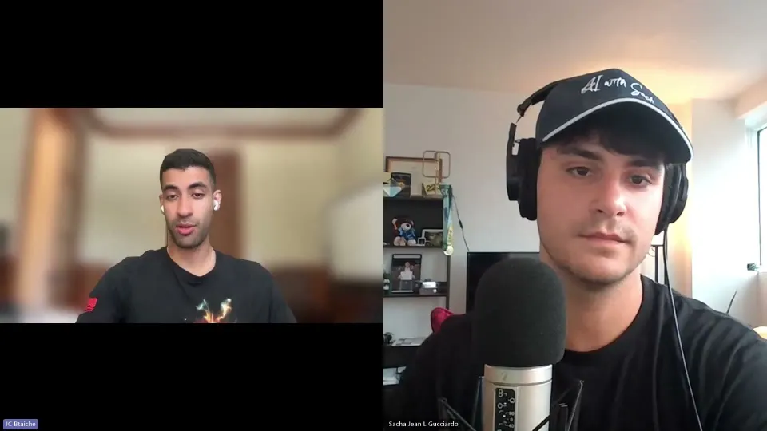

JC Btaiche
CEO and founder of Fuse, a fusion energy company based in Canada
Episode with JC

How Fuse is Transmuting the Energy Crisis into OpportunityJC Btaiche explains how Fuse uses pulsed power to pursue fusion energy, and why AI's growing appetite for electricity makes that work urgent.JC BtaicheCEO and founder of Fuse, a fusion energy company based in CanadaIn JC’s words
Fuse's way to make a star on Earth: a lightning bolt in a bottle.
So it's like creating an artificial sun on Earth and putting it in a bottle. And you can imagine that's pretty challenging. And so for us, the way we create those conditions that are, you know, star-like or sun-like conditions, you know, we create essentially a lightning bolt. So essentially creating a lightning in a bottle that, you know, implodes a kind of fuel.AI is driving energy demand up exponentially. One founder says fusion is the last energy source we'll need.
I think it's the last energy source that humanity will ever need. And especially as the technologies like AI, quantum or others are starting to wrap up, the world's demand for energy is growing exponentially. And so we believe fusion is going to be the answer for the energy needs for our civilization.He wanted to see a star up close. Googling how led him to fusion.
So I went to the Internet and started Googling, like, how to do interstellar travel in a timely manner. And, you know, there are some folks, really cool people who have spent a lot of time thinking about this and came up with this fusion-powered rockets. And so that's when I said, I want to build a fusion-powered rocket.GDP per capita tracks kilowatt hours per capita. That's why one founder chose fusion.
Even if you think basic things like GDP per capita, it's directly tied to kilowatt hour available per capita. So how do we kind of get the whole world to prosper? I think fusion and energy is at the core of, like, human prosperity.Many fusion startups bet on power in 7 to 10 years. Fuse sells technology now.
taking a bet that in 7 to 10 years there's going to be commercial energy. And that's all that, you know, we're working very hard to get there as fast as possible, but we're making revenue today. And so we're building a sustainable business and maturing the technology to get to fusion energy eventually.A third the size, five times cheaper, twice as efficient: the pitch for Titan.
And why Titan really matters is it can make any next generation fusion facility based on the Titan technology at least one third the size or at least five times cheaper and doubles the energy efficiency. It was much more scalable as an approach.Muscles, then combustion, then the atom: three ages of human energy.
Like there's the age of the like muscles, right? When we were using cows or our own, you know, muscles and humans to do work. And then we went into the chemistry time, right? Where the chemical energy era, we're trying to do, you know, combustion and railroad, just combustion and different, you know, different ways to generate heat and then through heat produce energy.Fossil fuels have lots of cons, but we also make plastics and materials from them.
Because even if you think about, you know, fossil fuels, a lot of people talk about how bad they are for the environment, et cetera, which they definitely have lots of cons. But, you know, fossil fuels are also very useful to producing plastics, to producing different materials and molecules that are really, really useful for humanity and basic necessities.Imagine never worrying about the electricity bill or how much compute you can use.
Like if you wake up and you have more energy, right, then you don't have to worry about turning off the light or how much your compute power is. Like energy becomes a commodity that I think will have significant impact on like human flourishing, innovation, et cetera.Asked when fusion arrives, he won't give a date. He tracks the rate of progress.
I think like what really matters here rather than like putting a date is actually measuring the rate of progress. But I think it took decades to get to some big milestones. But I've seen right now, especially with the surge of there's six billion dollar, over six billion dollar at this point announced publicly at least.Fusion's roots are in defence research. Fuse builds on that dual-use technology.
So there's really awesome technology that was built through national security and defense programs that, you know, it's time to commercialize. And I think FUSE falls in the same category where there's really amazing technology that is dual use by nature, you know, that will help safeguard humanity.